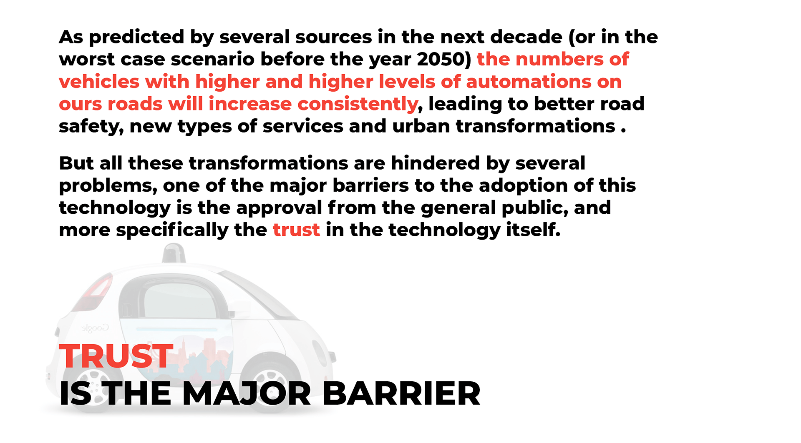
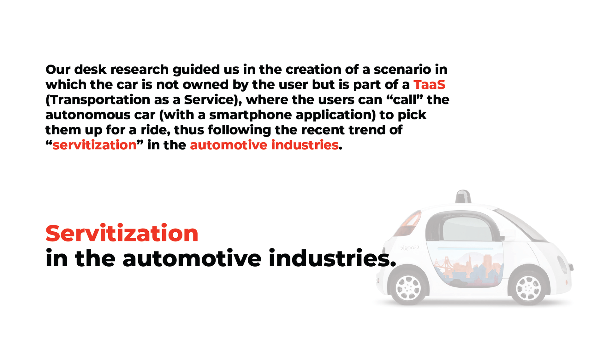
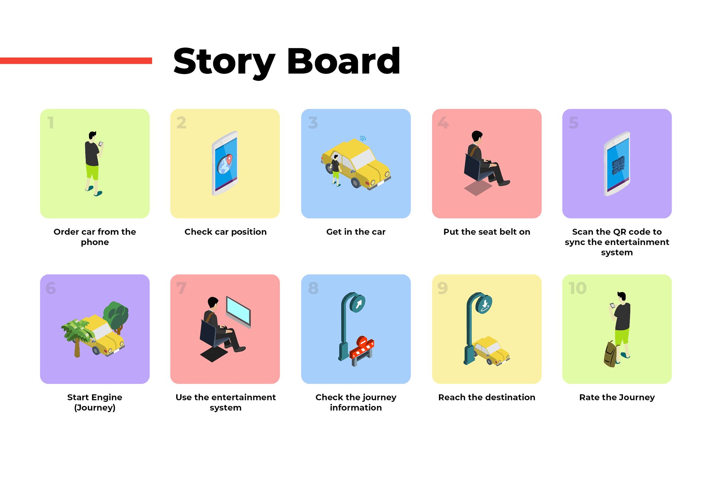
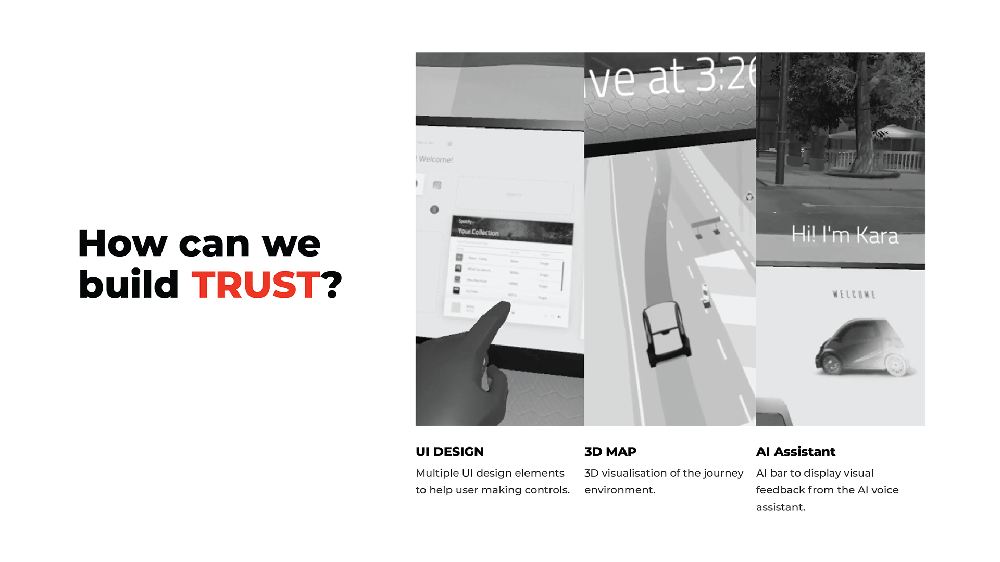
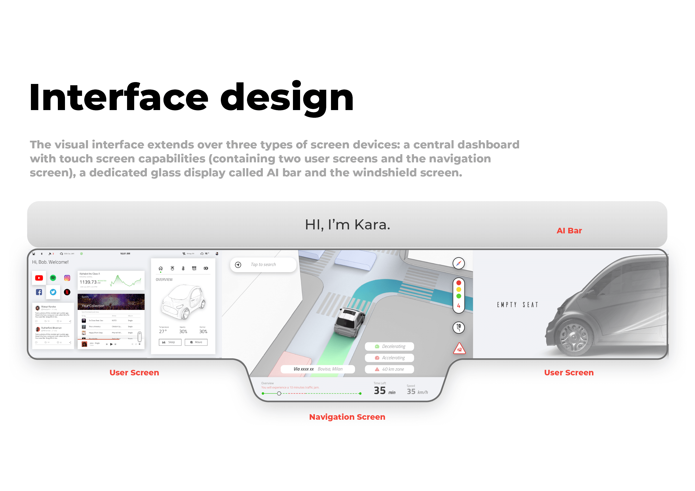
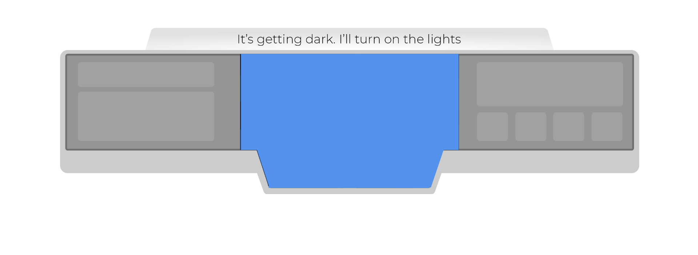
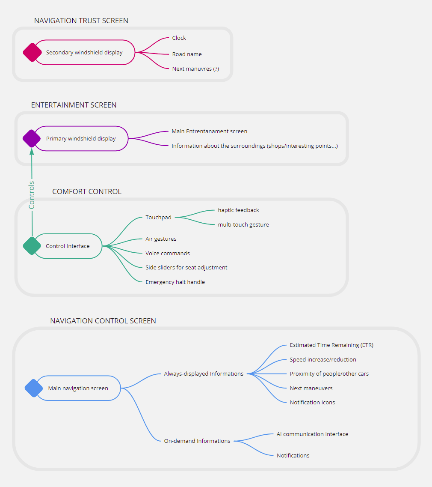
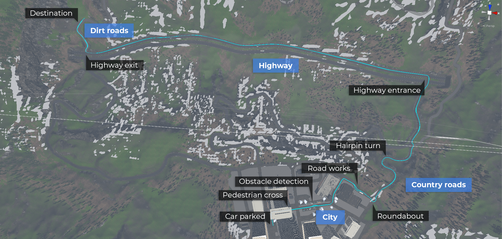
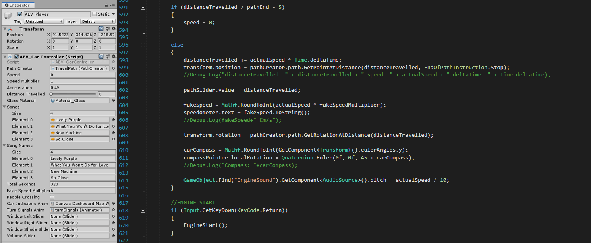

TEAM MEMBERS
Nicolò Azzolin
Andrea Picardi
Zhu Tao
ROLE
research, concept creation, simulation development
COURSE
Virtual and Physical Prototyping, 2019
Politecnico di Milano, Milan
A Scenario for Autonomous Driving Vehicles
Virtual scenario simulation with HMD
QUICK NAVIGATION
This VR simulation aims at the creation of a possible future scenario where SAE level 5 cars share the road with vehicles driven by humans (SAE level equal or inferior than 3). The main focus of the simulation is on the human-vehicle interactions and how the information about road, entertainment and surrounding area can be optimized, displayed and communicated to the user to build trust in the car and the underlying system. In order to create this simulation different technologies have been used: the core of the simulation is the Unity game engine, that provides us with the base foundation upon which to build theinteractive scenario, a Head Mounted Display (HTC Vive Pro), to grant a better immersion of the user in the simulation, and a Leap Motion sensor for tracking the user hand inside the 3D space.
The simulation scenario has then led us to the writing of a journal article about HMI Design for increasing user trust in autonomous vehicles. It has been published for the International CAD Conference 2020.
Check it out on
ResearchGate




User Screen
This screen is meant to be personal and can be customised with other third-party services (ex. Youtube, Spotify, Twitter etc.) by connecting each personal account to the car dashboard. It also contains all the information that go beyond the monitoring of the driving, allowing the user to have a complete control over the car’s interior environment (panel on the right).
Navigation Screen
This screen contains all the driving-related information, showing a map with a stylised representation of the car and its surroundings. On the bottom some other non-critical information (speed, time left, trip progress) can be easily read, as well as possible problems along the road. On the right side, the overtake notification, the traffic light representations as well as some standard road signals are displayed only when needed.
AI Bar
The information displayed on the AI bar are only textual, but jointly and complementary with the AI voice, they will represent the main communication channel with the users.
Development
The development of the scenario followed the double diamond processs. We started from the re-thinking of the car's interiors, to then move on to the digital interfaces and the information design. Consequently, we defined what informations each interface should contain. With the physical and informative environment defined, we moved on to the Unity implementation with the help of AirSim for Unity, an open-source project that we used to as a base for the simulation environment.
We started with an initial research on the state of the art, the technology and the new trends based on articles, papers and data we found online. Once we formed a solid idea of the context, we had a brainstorming session on seats configuration and car environment.
{kind=link}
{kind=link}
With the seating configuration defined, we set a draft of the appearence of the dashboard...

...followed by a diagram to clear our ideas on the role of each interface.

As we felt the core parts of the environment have been defined, we moved to the Unity implementation. By defining the path, we tried to make it go across multiple types of environments and situations.

The car functions and features, as well as the VR headset development have been the center of the development and took the most time. We also used a pedestrian system addon to handle the crossroad event along the path.
{kind=link}
{kind=link}
The scripting is far from being optimized, but it has been handled in a way that would allow us to have a better and quicker control over the car functions and events on the path by making public variables accessible from the Unity Editor panel.

Special thanks to iDrive Lab for providing us with the workspaces and devices
Sources
- Gereon Meyer and Sven Beiker, eds., Road Vehicle Automation 4, Lecture Notes in Mobility (Springer International Publishing, 2018), doi:10.1007/978-3-319-60934-8.
- Roger Lanctot, “Accelerating the Future: The Economic Impact of the Emerging Passenger Economy,” June 2017, 30.
- Todd Litman, “Autonomous Vehicle Implementation Predictions,” June 2020, 45.
- Kanwaldeep Kaur and Giselle Rampersad, “Trust in Driverless Cars: Investigating Key Factors Influencing the Adoption of Driverless Cars,” Journal of Engineering and Technology Management 48 (April 1, 2018): 87–96, doi:10.1016/j.jengtecman.2018.04.006.
- Adam Henschke, “Trust and Resilient Autonomous Driving Systems,” Ethics and Information Technology 22, no. 1 (March 1, 2020): 81–92, doi:10.1007/s10676-019-09517-y.
- Mingyang Hao, Yanyan Li, and Toshiyuki Yamamoto, “Public Preferences and Willingness to Pay for Shared Autonomous Vehicles Services in Nagoya, Japan,” Smart Cities 2, no. 2 (June 2019): 230–44, doi:10.3390/smartcities2020015.
- Mobility-as-a-Service and Changes in Travel Preferences and Travel Behaviour: A Literature Review,” ResearchGate, accessed July 4, 2020, https://bit.ly/2VNePK7.